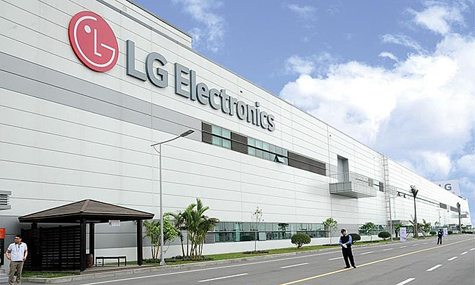

Меня зовут Екатерина.
Здесь я расскажу немного о себе и о моем пути к сфере IT.
На последних курсах университета,
кстати, закончила я
Белорусский Государственный университет
Информатики и Радиоэлектроники
Как Вы смоги заметить, переходя по ссылки выше, Вы попадаете сразу на страничку факультета Информационных Технологий и Управления. потому что именно этот факультет я закончила в 2010 году по специальности инженер в ИТ и управлении в ТС.
На последних курсах обучения меня пригласили на практику, с дальнейшим трудоустройством, в компанию LG Electronics RUS с переездом в РФ.

Так я, спустя несколько дней после получения диплома о высшем образовании, переехала в РФ.
Работала в компании LG более 8 лет в конструкторском отделе по разработке стиральных машин.
В 2018 году я ушла в так называемый Декретный отпуск#1, но работала удаленно из дома, перейдя в другой отдел - Отдел Закупок - на доложность ведущий специалист закупок
Так, вкратце, я начала обучение в GeekBrains по специальнсти Java-Разработчик.